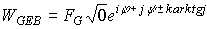

|
В. И. ЕЛИСЕЕВ ВВЕДЕНИЕ В МЕТОДЫ ТЕОРИИ
ФУНКЦИЙ ПРОСТРАНСТВЕННОГО КОМПЛЕКСНОГО ПЕРЕМЕННОГО |
|
10.12. Гравитационное взаимодействие в комплексном пространстве-времени. Структура эфира.
Взаимодействие гравитационных масс происходит через общее изолированное направление. В результате образуется структура более высокой размерности. Изолированное направление характеризуется сингулярностью по комплексному аргументу
arktgi.Уравнения Максвелла дают следующие выводы:
Электромагнитное взаимодействие распространяется со скоростью света. Электрические Е и магнитные В поля перпендикулярны друг другу.
Скалярная величина
инвариантна относительно преобразования от одной инерциальной системе к другой.В любой системе координат преобразованные поля
должны быть равны по величине и перпендикулярны друг другу.Световая волна в любой системе координат остается световой волной.
По законам комплексной алгебры инвариантная величина может быть последовательно преобразована
Световая волна следовательно может быть выражена в виде
Изолированное направление образуется при условии
, так что будем иметьЭлектрическая Е и магнитная В составляющие волны взаимно перпендикулярны, равны по величине и исходят из разных точек окрестности источника, повернутых относительно друг друга на угол
.При переходе к четырехмерному пространству электромагнитная гравитационная волна описывается также по законам пространственной комплексной алгебре в виде
Если составляющие гравитационного поля равны

Гравитационная электромагнитная полевая энергия в своей структуре имеет изолированное направление (в теоретической физике это соотносится к понятиям из теории струн). Составляющие гравитационной энергии поля находятся во взаимно перпендикулярных пространствах, которые в источнике этих энергий имеют разные точки, повернутые относительно друг друга на угол
.Количественная величина энергии, ее плотность определяются энергией обменного кванта (в широком понятии: поля, эфира и т.д.), выделяемого взаимодействующими частицами для образования более сложной структуры.
В простейшем случае имеем
Откуда полевая энергия взаимодействия двух гравитационных масс может быть вычислена по формуле
|
10.12.1 |
Объем пространства взаимодействия можно в первом приближении оценить по радиусу взаимодействия
rЕсли распределить величину энергии обменного поля на этот объем, то получим плотность эфира ( другого более емкого слова подобрать не удается).
|
10.12.2. |
При взаимодействии вся плотность сосредотачивается в изолированном
, тогда объем туннеля взаимодействия равен
Плотность энергии в туннеле взаимодействия равна
Отношение плотности энергии в
|
10.12.3. |
Образование новой структура вызывает переход системы взаимодействующих частиц в связанное пространство большего числа измерений и поэтому сопровождается мгновенной скоростью. Пространство квантуется с мгновенной скоростью, так что с этих позиций Ньютон был прав. На следующем этапе взаимодействия происходит перераспределение энергии в
Энергетическая обменная масса, которая более емким словом может трактоваться как эфир, также имеет двойственный характер. При переходе в новое связанное пространство энергия эфира сосредотачивается в туннелях взаимодействия и оказывает сопротивление структурной перестройки. Плотность энергии в
Исследование решений уравнений ОТО А. Эйнштейна и уравнений РТГ А. Логунова направлены на исследования структуры гравитационного взаимодействия. Введение в уравнения А. Эйнштейна космологической постоянной
Так как, это означает, что взаимодействие вызывает рост размерности пространства –формирование новой структуры. Таким образом, энергия полевого обменного кванта учитывается введением дополнительного члена
в уравнение
Если
, то это означает, что пространство заполнено обменной массой гравитационного взаимодействия .Откуда полевая энергия взаимодействия двух гравитационных масс может быть вычислена по формуле
Объем пространства взаимодействия можно в первом приближении оценить по радиусу взаимодействия
r
Если распределить величину энергии обменного поля на этот объем, то получим плотность эфира ( другого более емкого слова подобрать не удается).
При взаимодействии вся плотность сосредотачивается в изолированном
, тогда объем туннеля взаимодействия равен
Плотность энергии в туннеле взаимодействия равна
Отношение плотности энергии в
Образование новой структура вызывает переход системы взаимодействующих частиц в связанное пространство большего числа измерений и поэтому сопровождается мгновенной скоростью. Пространство квантуется с мгновенной скоростью, так что с этих позиций Ньютон был прав. На следующем этапе взаимодействия происходит перераспределение энергии в
Энергетическая обменная масса, которая более емким словом может трактоваться как эфир, также имеет двойственный характер. При переходе в новое связанное пространство энергия эфира сосредотачивается в туннелях взаимодействия и оказывает сопротивление структурной перестройки. Плотность энергии в
С позиций структуры реального физического пространства, которая описывается оператором гравитационного взаимодействия, плотность массы, заполняющей все пространство материей, соответствует полевой обменной массы
деленной на объем, в котором она распределенаЕсли космологическая постоянная не равна нулю, то плотность массы материи пустого пространства, создающего гравитационное поле равно, согласно ОТО.
Таким образом, имеется принципиальная возможность произвести оценку физических величин, которые в настоящее время равны:
м*-2, г/см*3, эрг/см*3.
Для планет солнечной системы оператор гравитационного взаимодействия записывается в виде
где
-масса Солнца, и масса планеты, -радиус орбиты планеты.Решая уравнение относительно обменной массы в первом приближении получим
Объем физического пространства
, таким образом, плотность равна
Эта плотность материи равна плотности
. Поэтому имеем произведем преобразования и выделим  .
.
Космологическая постоянная представляет произведение отношения гравитационного радиуса массивного объекта к расстоянию взаимодействия на корень квадратный из отношения гравитационного радиуса второго объекта к расстоянию взаимодействия и деленному на квадрат этого расстояния. Отношение гравитационного радиуса Шварцшильда к расстоянию взаимодействия дает тангенс угла соответственно
с ясной геометрической интерпретацией.
Для Земли имеем данные: масса Земли г, масса Плутона
Большая полуось орбиты Земли
см, Плутона см.Масса солнца
г.Подставляя эти данные в расчетные формулы, получим
см*-2, см*-2
г/cм*3, г/cм*3
Сделаем один из основных выводов расчета. В комплексном пространстве нет сингулярности в принятом в настоящее время понимании. Математически и физически сингулярность есть результат вложения пространств разных размерностей одного в другое. Космологический член и его расчеты через гравитационные радиусы Шварцшильда и введенный оператор взаимодействия характеризуют гравитационное пространство как структурное. В физическом и математическом пространстве
нет точки сингулярности, а есть область более высокой размерности, через которую и происходит гравитационное взаимодействие пространств. Движение энергии гравитационного поля через эти сингулярные области замыкает пространство взаимодействия с образованием новой структуры, большей по величине размерности. Процесс бесконечен…Мини оглавление:
[0], [1.1.1, 1.1.2, 1.1.3, 1.1.4, 1.1.5, 1.1.6, 1.1.7, 1.1.8, 1.2, 1.2.1, 1.2.2, 1.2.2.a, 1.2.2.b, 1.2.2.c, 1.2.2.d, 1.2.2.e, 1.2.2.f, 1.2.2.g, 1.2.2.h, 1.2.3, 1.3.1, 1.3.2, 1.3.3, 1.3.4, 1.3.5, 1.3.6, 1.4.1, 1.4.2, 1.5, 1.6, 1.7.1, 1.7.2, 1.7.3.1, 1.7.3.2, 1.7.3.3, 1.7.4.1, 1.7.4.2, 1.8.1], [2.1, 2.2],[3.1, 3.2, 3.3, 3.4.1, 3.4.2, 3.4.3, 3.4.4, 3.4.5],[4.1, 4.2, 4.3, 4.4],[5.1, 5.1.Рис.52, 5.2, 5.3, 5.4, 5.4.Т1, 5.4.Т2, 5.4.Т3, 5.5.1, 5.5.2, 5.5.3, 5.5.4],[6.1.1, 6.1.2, 6.2.1, 6.2.2, 6.2.3, 6.2.4, 6.2.5, 6.3, 6.4.1, 6.4.2, 6.5.1, 6.5.2],[7.1, 7.2, 7.3, 7.4, 7.5, 7.6, 7.7.1, 7.7.2, 7.8.1, 7.8.2, 7.8.3, 7.9],[8.1, 8.2.1, 8.2.2, 8.3, 8.4, 8.5, 8.6, 8.6.T1, 8.7, 8.8.1, 8.8.2, 8.8.3, 8.9.1, 8.9.2, 8.9.3, 8.10, 8.10.T2, 8.10.T3],[9.1, 9.2, 9.3, Рис.88, 89, 90, 91, 92, 93, 94, 95, 96, 97, 98, 99, 100],[10.1, 10.2, 10.3, 10.4, 10.5, 10.6, 10.7, 10.8, 10.9, 10.10, 10.11, 10.12, 10.13, 10.14, 10.15.1, 10.15.2, 10.16.1, 10.16.2, 10.17, 10.18],[11]
Размещенный материал является электронной версией книги: © В.И.Елисеев, "Введение в методы теории функций пространственного комплексного переменного", изданной Центром научно-технического творчества молодежи Алгоритм. - М.:, НИАТ. - 1990. Шифр Д7-90/83308. в каталоге Государственной публичной научно-технической библиотеки. Сайт действует с 10 августа 1998.
E-mail: mathsru@gmail.com